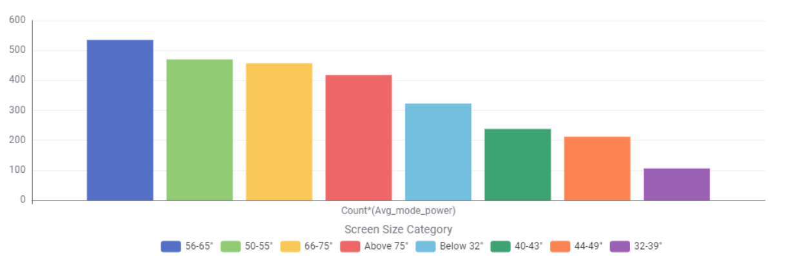

Issue : Energy Consumption used from TV
Issue demonstration :
Show relationship between screen size and average mod power from the
TVs
TV size recommendations for lesser energy consumption
Describe the recommendation of only high-star large TVs
Compare power use before vs after recommendation
SOLUTION:
Promote energy-efficient large TVs or limit size recommendations
Issue : Screen Size Availability and Frequency (56–65 inches most common)

Issue demonstration :
Show relationship between screen size and Count model no. from the TVs
TV Size Recommendations for Better Balance
Describe Recommendation of Optimal Popular Sizes
Compare the current frequency (where 56–65 inches dominates) with a more balanced distribution after encouraging size-appropriate choices (e.g., increased adoption of smaller sizes where suitable).
SOLUTION:
Encourage consumers to choose appropriately sized TVs (especially
within the 56–65 inch range) based on their needs, while avoiding
unnecessarily large screens that may not provide additional value.